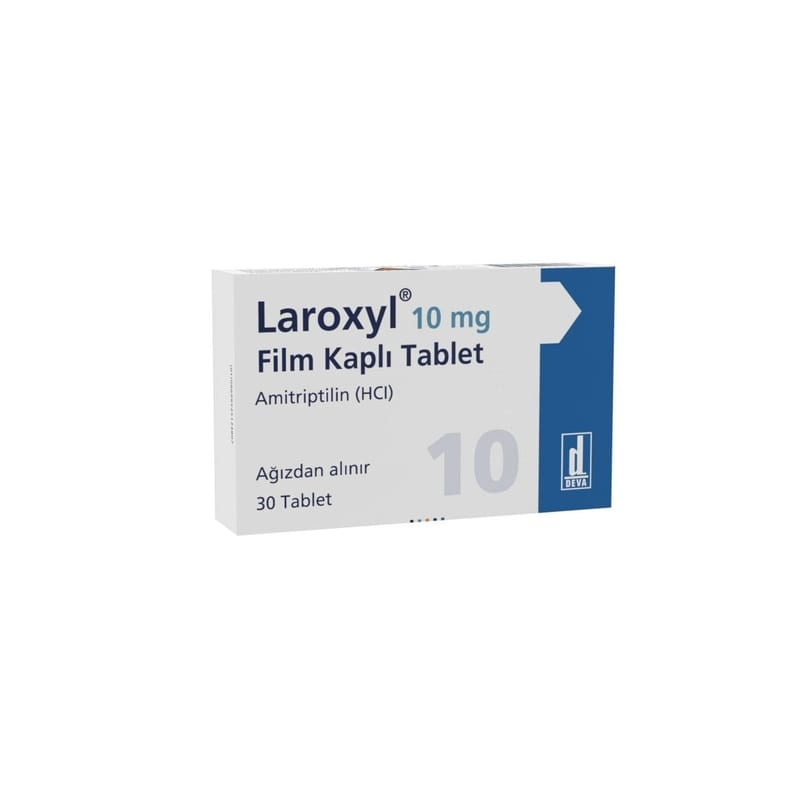

Laroxyl 10 mg Film Kaplı Tablet, 30 Adet

Ne için kullanılır
KT · Bölüm 1LAROXYL, amitriptilin adı verilen etkin madde içeren bir ilaçtır. Her film kaplı tablet 10 mg amitriptilin içerir. LAROXYL, açık pembe renkli, yuvarlak, bikonveks, film kaplı tablettir. LAROXYL 30 adet film kaplı tablet içeren blister ambalajlarda bulunur.
LAROXYL trisiklik antidepresan adı verilen ilaç grubuna aittir. Bu ilaçlar beyindeki kimyasal maddelerin düzeyini de ğiştirerek depresyon semptomlarını (belirti) düzeltir.
LAROXYL aşağıdaki durumların tedavisinde kullanılır; • Depresyon semptomlarının tedavisinde • LAROXYL depresyon belirtilerinin giderilmesinde, özellikle endojen depresyonun tedavisinde kullanılır.